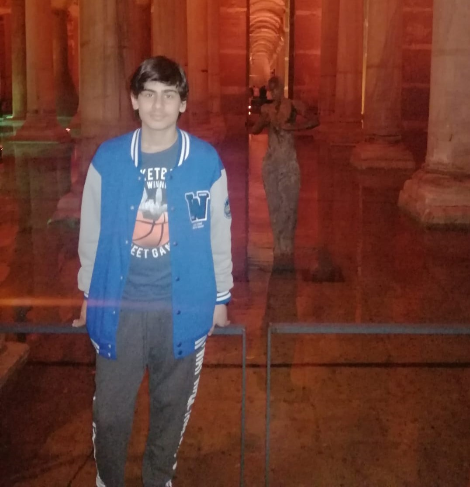
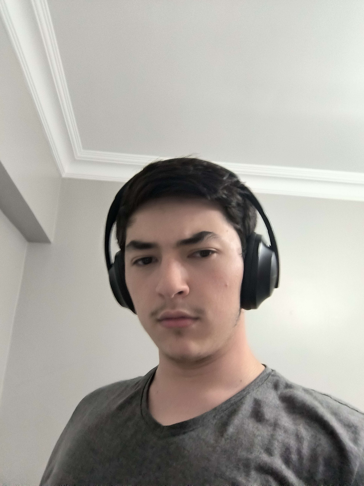
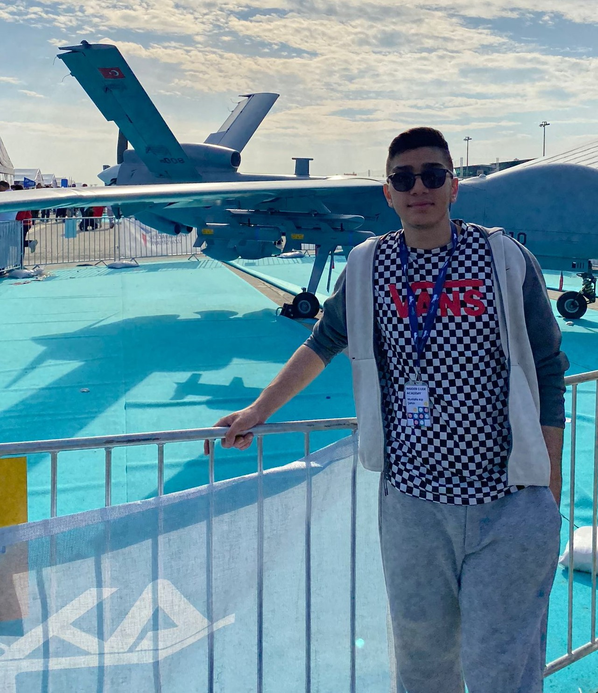
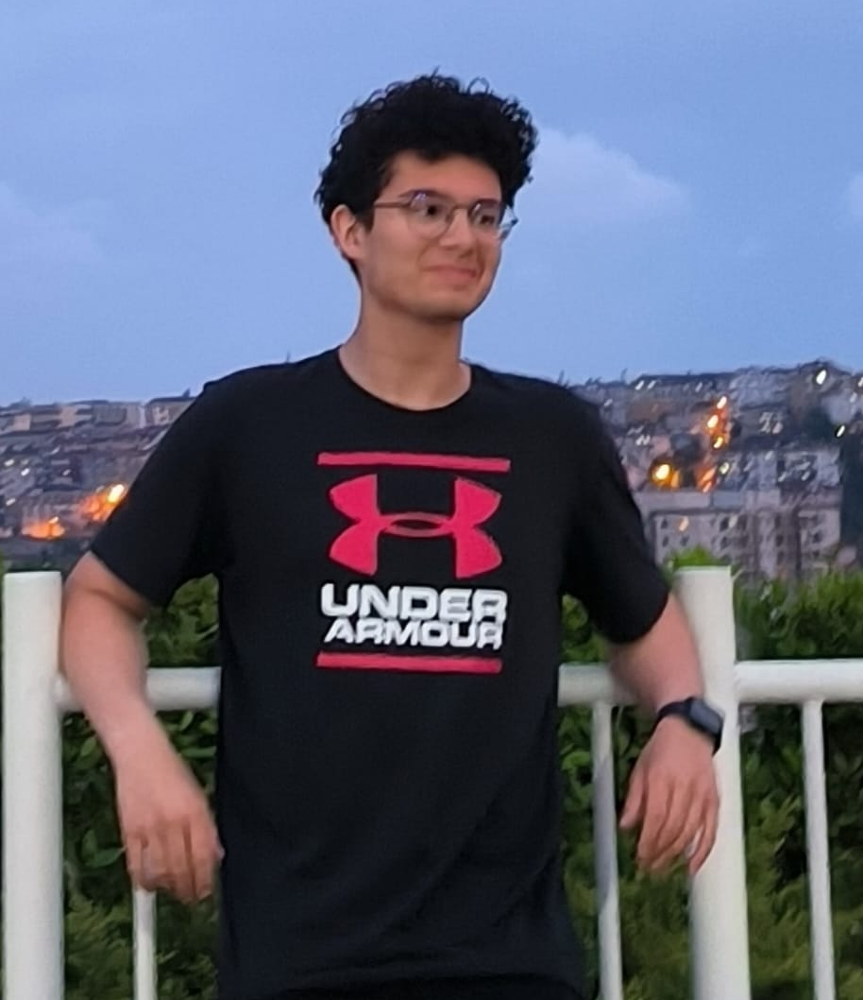
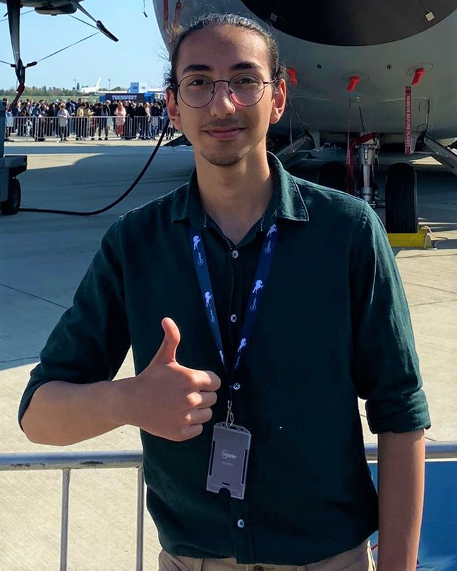

Yiğit Eren Solmaz

Hello, my name is Yiğit Eren Solmaz. I'm 15 years old now. I'm going to 10th grade. The high school I go to is Tuncay Azaphan Vocational Technical and Anatolian High School. I am currently trying to increase my English level. I love coding, it is more fun than other jobs. I am sure that I will improve my coding skills thanks to this project made by Insider and Kodluyoruz together. My dream is to become a computer engineer. I believe that I will improve myself in the field of coding in the future and come to better places.
Ege Gökyokuş

Hello welcome to my blog! My name is Ege and I am a passionate Frontend Devoloper. I have always had a love for Cooking and had a lot of pain trying to find the correct recipe if you also are having a lot of pain right now don't worry now there is a website that you can rely on by now. With 3 years of experience in Cooking, I have gained valuable insights and skills that I hope to pass on to our users. My goal is to provide you with informative and engaging content that will inspire you to help you troughout your cooking journey at your kitchen.
Thank you for visiting my site, and I look forward to connecting with you!
Mustafa Alp Şahin

Hello, I'm Mustafa Alp Sahin! I'm 16 years old and I'm both a software engineering student and interested in mechatronics engineering. My interest in technology drew me into these two exciting fields. In this blog post, I would like to share with you why I discovered my passion for technology and the connection between these two disciplines.
Software engineering is the foundation of the digital world. It can be seen as one of the powerful engines behind ubiquitous technological solutions such as computers, mobile apps and websites. Software development attracted me as a field where I can use my creativity and problem-solving skills. Learning the language of coding and solving real-world problems has been a great source of excitement for me.
Onur Dinçoğlu

I was born on May 10, 2007 in Istanbul. I finished kindergarten at Neşerberk Kindergarten and attended primary and middle school at Yiğit Schools for 8 years.
I am currently actively attending Italian High School. I am currently 16 years old and I am curious about subjects such as coding. I actively speak Turkish, English and Italian. Thanks to my success in middle school, I am currently at this school and learning coding. I hope to work more on coding in the future. If you want to reach me, you can find my Instagram below.
Barış Adsız

Hello, I'm Baris Adsız! I'm 17 years old and I'm a software engineering student and I'm interested in IT and technology. My interest in technology drew me into these two exciting fields. In this blog post, I would like to share with you why I discovered my passion for technology and the connection between these two disciplines.
Software engineering is the foundation of the digital world. It can be seen as one of the powerful engines behind ubiquitous technological solutions such as computers, mobile apps and websites. Software development attracted me as a field where I can use my creativity and problem-solving skills. Learning the language of coding and solving real-world problems has been a great source of excitement for me.